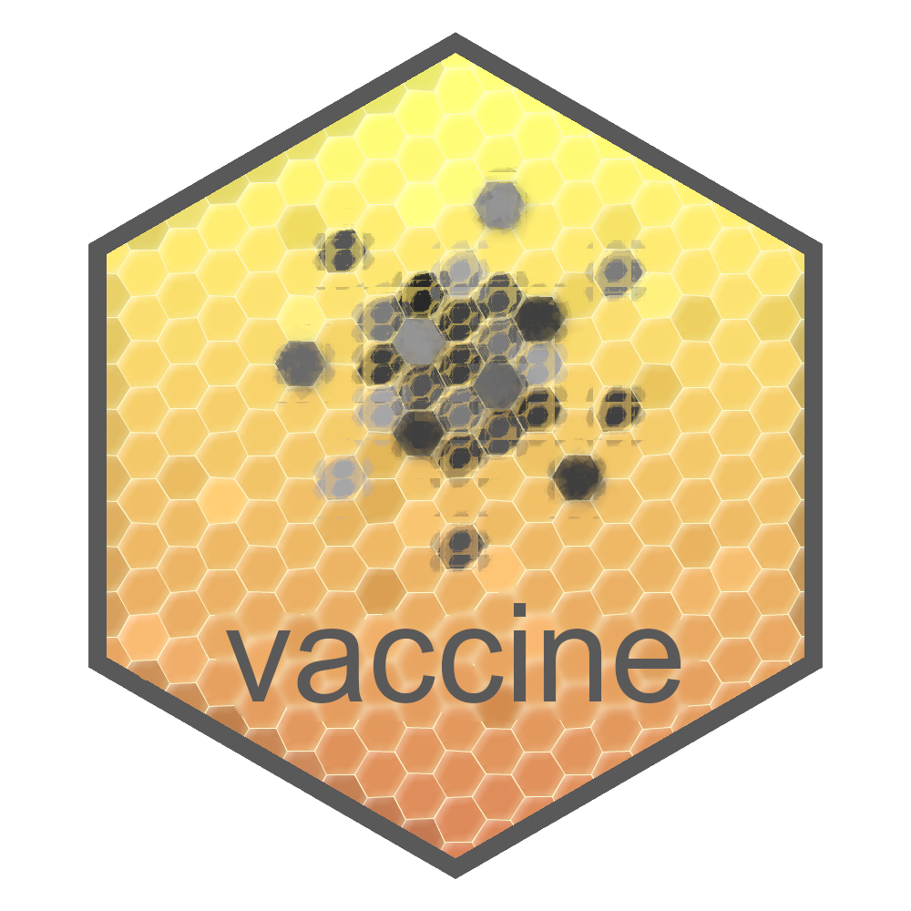

Changelog
Source:NEWS.md
vaccine 1.2.1
CRAN release: 2024-02-16
Minor changes
- Fixed a bug that displayed an incorrect package version number at startup.
- Tweaked the SuperLearner library involved in standard error estimation for
est_ce(..., type="NP"), resulting in improved performance. - Fixed a bug related to
plot_ce(..., density_type="kde edge"). - Fixed a minor bug related to the
SuperLearnerpackage introduced in version 1.2.0.
vaccine 1.2.0
CRAN release: 2024-02-14
Major changes
- Added the
trimfunction, which can be used in conjunction with theplot_cefunction to truncate the display of estimate objects produced byest_ce. Specifically, estimates with X-coordinates that lie outside specified quantiles of the observed distribution of the marker are removed. See package vignette and examples. - Added the
as_tablefunction, which formats estimate objects produced usingest_ceas a table.
Minor changes
- Implemented various changes to the
plot_cefunction: added background kernel density plotting, changed default plot styling, fixed a bug that caused CR plots to be displayed instead of CVE plots whenplot_ce(..., which="CVE")was called, and added to the plotting section of the main package vignette.
vaccine 1.1.0
CRAN release: 2023-12-04
Major changes
- In
est_ce, added the optionreturn_p_value; if set toTRUE, a P-value will be returned corresponding to the null hypothesis that the CVE curve (or equivalently, the CR curve in the vaccine group) is constant. Iftype='Cox'is specified, this will be a Wald-type test using the estimated Cox model parameter vector. Iftype='NP', this will be a nonparametric test assuming monotonicity of the curve.
vaccine 1.0.0
CRAN release: 2023-10-20
Major changes
- Added functions for nonparametric estimation and inference for mediation analysis parameters, including the natural direct effect, the natural indirect effect, and the proportion mediated.
- Adapted nonparametric and Cox-based CVE estimation and inference to handle settings in which some or all covariates are measured only in phase two (e.g., applicable to settings in which researchers want to control for a baseline biomarker measurement).
- Added confidence band monotonization for nonparametric CVE inference.